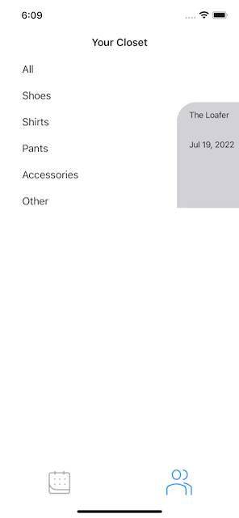
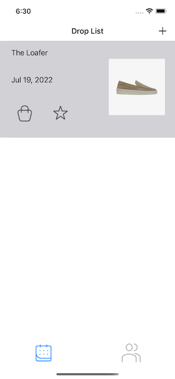
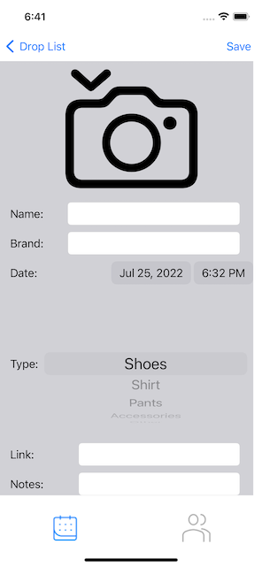
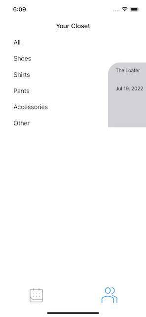
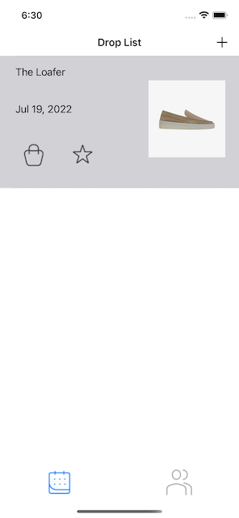
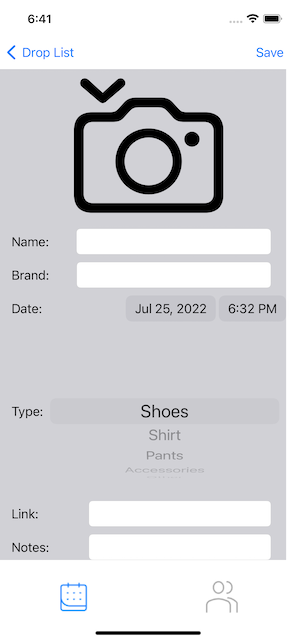

Drop: UIKit Edition
 





This was my final project for iOS Development #3 Spring Semester. This project was meant to be a portfolio piece with little to no restrictions. This application is a release tracker for clothing items. Users are able to create drops and set reminders along with adding items to a user closet where they can sort through their collection. The following techniques were used throughout the project:
- UITableView
- Diffable Data Source
- Core Data
- Notification Center
- Camera
- WebKit
- Custom Animations
Source Code: GitHub